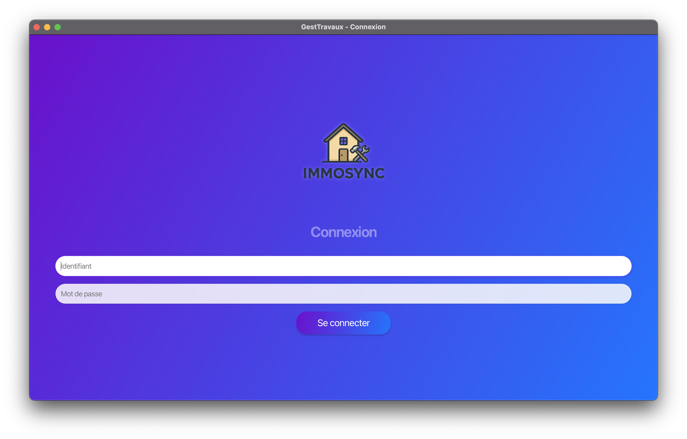
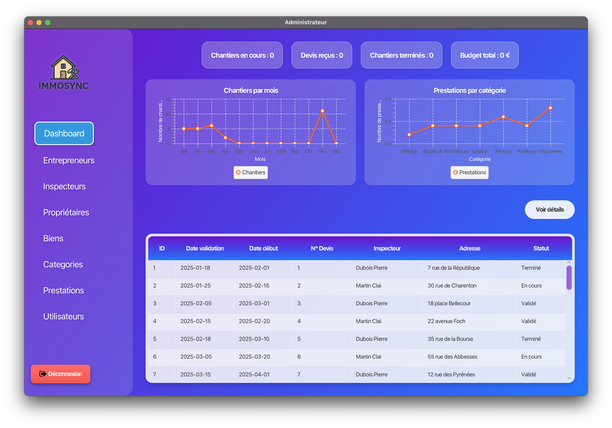
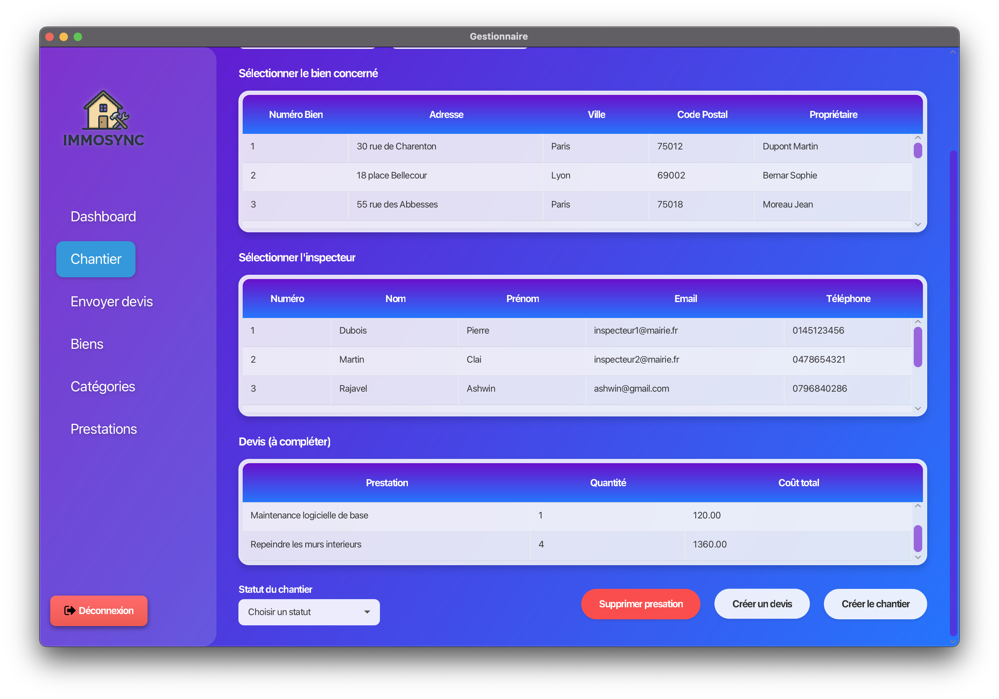
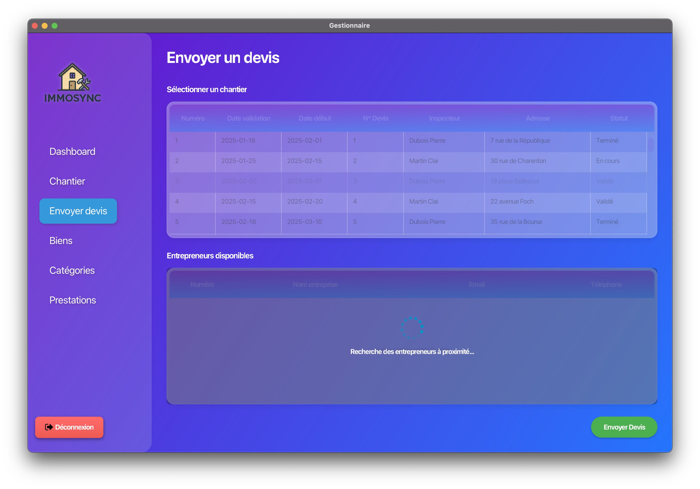
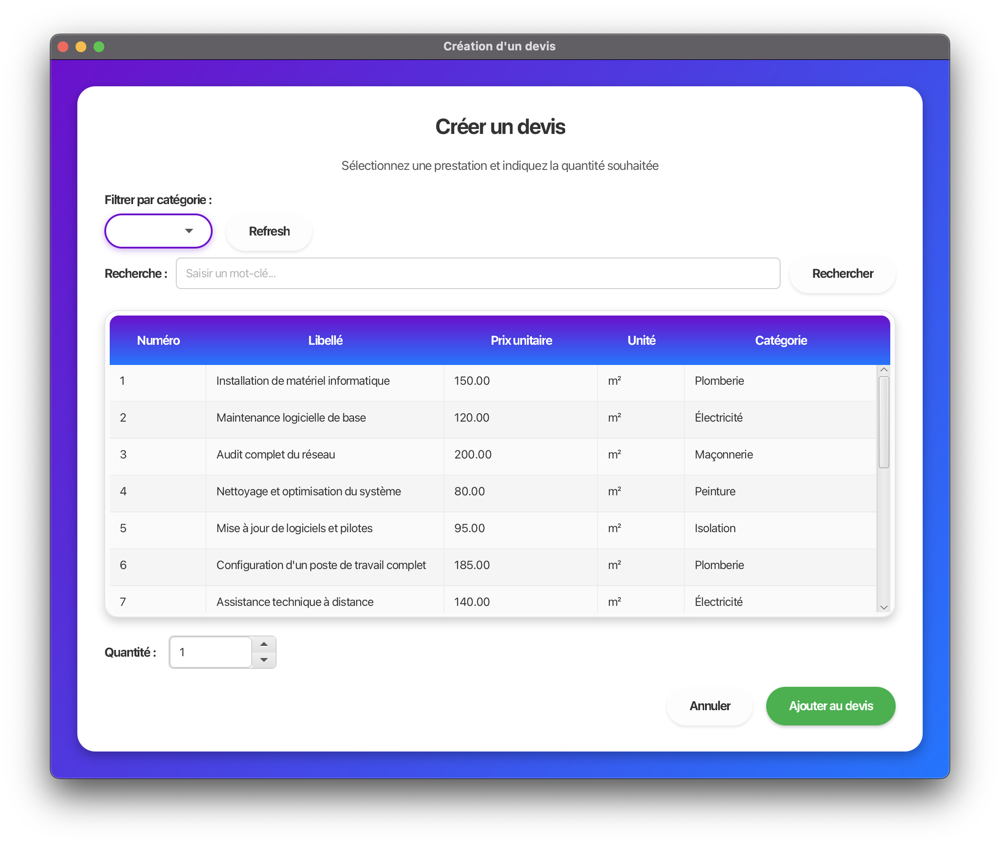
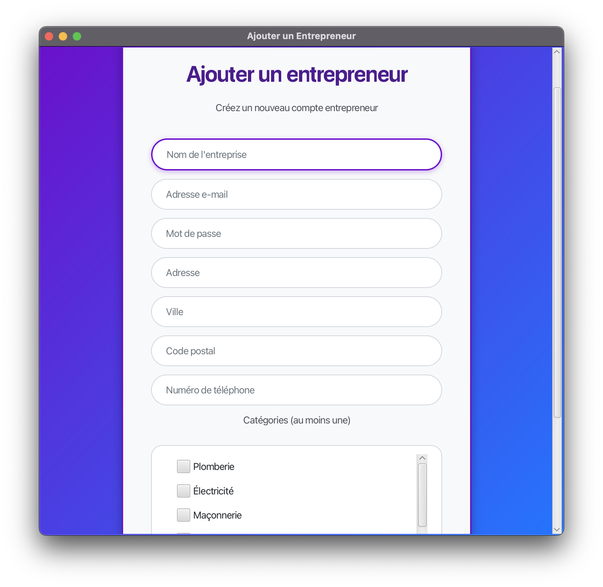

Application de bureau pour la gestion complète des chantiers immobiliers — pilotage, comparaison de devis et suivi d'avancement.
IMMOSYNC est une société de syndic proposant des services de gérance de biens immobiliers. Elle assure le maintien en état des biens en faisant réaliser des travaux dans les appartements et parties communes. Le processus de gestion était jusqu'alors entièrement manuel : 3 personnes géraient les chantiers via des échanges dispersés, un archivage papier et un suivi difficile des chantiers multiples. L'objectif du projet était de digitaliser et moderniser l'ensemble du processus pour réduire de 40% le temps de traitement des dossiers.
Le projet repose sur deux applications distinctes partageant une base de données MySQL commune. L'application Java Desktop est dédiée au gestionnaire IMMOSYNC pour le pilotage global des chantiers.
Interface gestionnaire — pilotage, comparateur de devis, rapports
Interface inspecteur, entrepreneur et propriétaire
Base de données unique accédée par les deux applications
Persistance des entités Java vers MySQL
CRUD complet sur les entrepreneurs, propriétaires, biens et prestations avec leurs catégories respectives.
Création du dossier chantier, établissement du devis type, assignation d'un inspecteur et validation préliminaire.
Sélection automatique des entrepreneurs qualifiés dans un rayon géographique via algorithmes de calcul de distances.
Comparaison multi-critères pondérés : date de début des travaux et prix. Interface graphique avec jeu de couleurs pour faciliter la décision.
Planning Gantt interactif, tableau de bord temps réel avec indicateurs colorés et système d'alertes automatiques.
Génération automatique de rapports PDF, procès-verbaux, courriers et avenants en fin de chantier.





